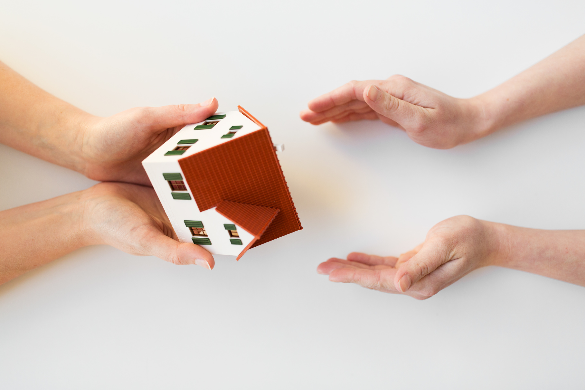

Для большинства людей покупка собственной квартиры – одна из самых важных, долгожданных и крупных покупок в жизни. И чтобы ожидание не обернулось кошмаром, к вопросу приобретения квартиры надо подходить серьезно, вдумчиво и ответственно.
Сделки с недвижимостью не требуют обязательного нотариального удостоверения, однако на сегодняшний день все больше и больше граждан предпочитают сделку, удостоверенную нотариусом, сделке в простой письменной форме. Причин тому множество, но одна из самых основных то, что нотариальное удостоверение сделки – это своего рода заслон от мошенников, кроме того, нотариус - единственное лицо на рынке недвижимости, которое несет ответственность за свои действия, и в случае своей вины или оплошности компенсирует пострадавшей стороне ущерб.
Недаром все ипотечные договоры обычно удостоверяются нотариально. Банки просят покупателей делать это, защищая себя от неблагоприятных последствий сделки.
Ведь только нотариус обеспечивает юридическую чистоту сделки, освобождает ее участников от необходимости вникать в сложные правовые и юридические тонкости, подробно разъясняя все аспекты сделки и составляя юридически грамотный документ, гарантирует пострадавшей стороне возмещение ущерба в случае мошенничества с документами. Нотариус разъясняет сторонам смысл и значение сделки, проверяет полномочия сторон на совершение сделки. Кроме того, при наличии сомнений в подлинности документов, нотариус вправе их проверить путем направления официальных запросов. (перечень документов определен в ФЗ «О государственной регистрации прав на недвижимое имущество и сделок с ним»), наличие обременений и запрещения отчуждения недвижимости. При удостоверении сделок с участием несовершеннолетних или недееспособных граждан также проверяется факт согласия их законных представителей, органов опеки и попечительства. Тем самым снимается риск последующего оспаривания сделки. Нотариус – объективная сторона, незаинтересованная в результатах сделки, что также немаловажно для ее чистоты и прозрачности.
Доверяя нотариусу вашу сделку с недвижимостью, вы избавляетесь от беготни, очередей и необходимости кропотливо заполнять и перепроверять гору документов. В нотариальной конторе для вас подготовят «проект сделки» - перечень всех действий, которые будут проведены в вашем случае, как, например: составление договора; фиксирование воли сторон по таким вопросам как согласование цены продажи, формы, порядка оплаты и возможности рассрочки платежей; оформление согласия супругов, собственников и т. д. Затем вас ждет составление и подписание договора, в котором будут учтены все условия сделки.
Во время подписания договора нотариус обязательно зачитывает его присутствующим заинтересованным лицам и подробно разъясняет все условия и правовые последствия сделки. Часто бывает так, что одна из сторон вносит коррективы в договор, потому что до этого этапа не ясно представляла себе последствия.
Когда договор подписан, нотариус подает документы для регистрации права собственности в Росреестр. Если вы сделаете это самостоятельно, то это займет куда больше времени, чем если документы поступят из нотариальной конторы – всего три дня в письменной форме и один день, если документы будут предоставлены в электронном виде. Собственнику останется лишь забрать из нотариальной конторы уже зарегистрированные документы в удобное для него время.
Если же договор был заключен в простой письменной форме, то помимо самостоятельного сбора необходимого пакета документов, всем участникам сделки необходимо явиться на подачу заявления на государственную регистрацию лично и одновременно, что, учитывая ритм современной жизни, как минимум, неудобно, а как максимум, невозможно.
Кроме того, с 1 января 2015 года значительно снижены тарифы на нотариальное удостоверение сделок с недвижимостью.
И даже расчеты по сделке теперь можно провести не с помощью банковской ячейки, а через депозит нотариуса, что не только гораздо удобнее, но и обезопасит вас и обойдется дешевле, чем аренда ячейки.
Самая цивилизованная форма рынка – это когда продавца или покупателя (в зависимости от задачи) ищет профессиональный риелтор. Он же согласует цены, время просмотра квартиры, и т.п. А вот правовую сторону сделки готовит и отвечает за нее – нотариус. Государственный регистратор на основании проверенных и подготовленных нотариусом документов регистрирует переход права собственности. Вот тогда можно быть уверенным в чистоте и законности сделки, а также в соблюдении интересов и покупателя и продавца недвижимости.